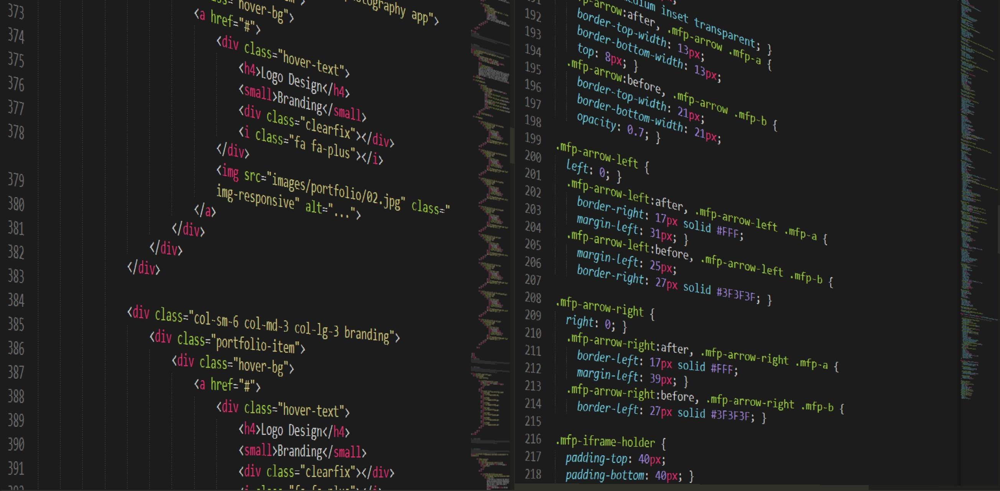

Questions/Réponses sur le Web de 11 à 15
Question 11 :
"Comment peut-on savoir si le code de sa page Web a été correctement écrit ?"
Pour savoir cela, nous pouvons déjà tester la page Web, si elle s'affiche correctement et sans accros. Ensuite on peut verifié ça avec ce qu'on peut appeler le « code couleur » de l'editeur de texte (ex: Notepad++) avec cela on peut donc verifier la synthaxe de notre code et jugé si celle ci est correcte ou pas.
Question 12 :
"Qu’est-ce qu’une balise HTML ?"
Un document HTML est un fichier texte qui contient des balises. Ces balises doivent être utilisées d'une certaine façon pour décrire correctement la structure du document. Les balises indiquent au navigateur comment afficher le document, certaines balises permettent d'intégrer différents médias comme des images, des vidéos ou des musiques parmi le texte de la page.
Question 13 :
"Qu’elle est l’utilité de l’attribut d’une balise HTML ?"
Chaque élément HTML peut avoir un ou plusieurs attributs. Ces attributs sont des valeurs supplémentaires qui permettent de configurer les éléments ou d'adapter leur comportement.
Question 14 :
"Qu’est-ce que Jquery ?"
Le jQuery est une bibliothèque JavaScript libre et multiplateforme créée pour faciliter l'écriture de scripts côté client dans le code HTML des pages web. Son but étant le parcours et la modification du DOM, elle contient de nombreuses fonctionnalités, notamment des animations, la manipulation des feuilles de style en cascade (accessibilité des classes et attributs), la gestion des évènements.

Question 15 :
"Qu’est-ce qu’un Widget ?"
En informatique, un widget est un nom construit à partir des termes anglais « window » et « gadget », recouvrant deux notions distinctes en relation avec les interfaces graphiques. Ca peut être un élément visuel d'une interface graphique (bouton, barre de défilement, liste déroulante, etc.) ou alors un petit outil interactif qui permet d'obtenir des informations (météo, actualité, dictionnaire, carte routière, pense-bête).